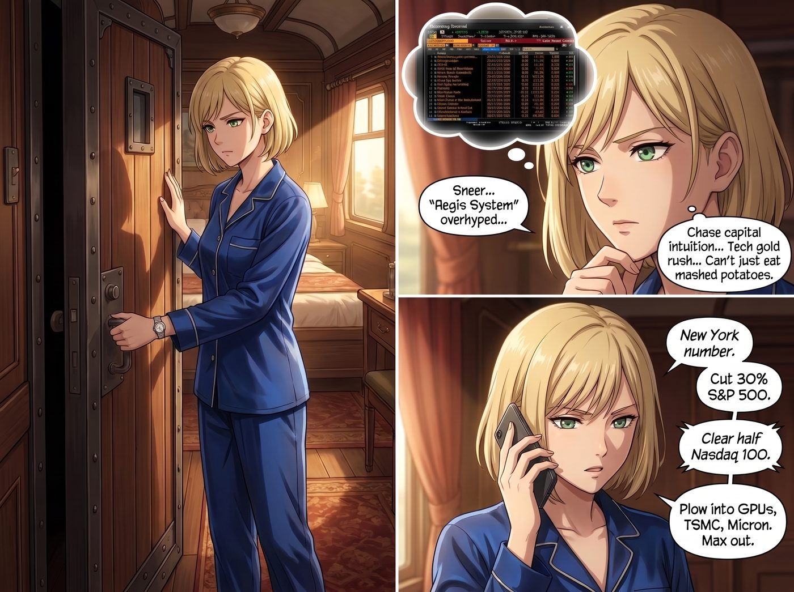
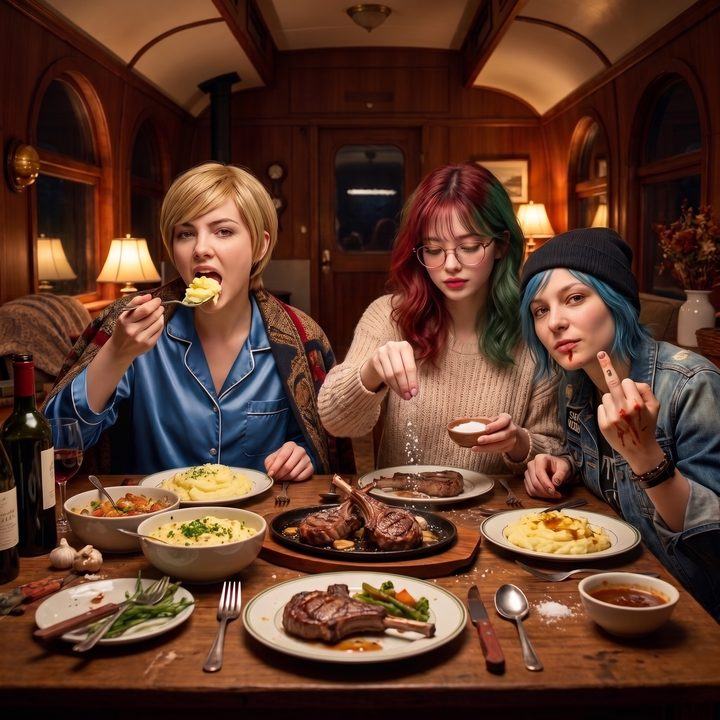

船票與鏟子（中）：賣鏟子的人


Victoria 關上臥鋪車廂套房那扇訂製的隔音門，確認外面聽不到動靜後，立刻從真絲睡衣的口袋裡掏出手機，撥通了紐約的號碼。
她確實按下了彭博終端機的電源，也確實對那種靠炒作包裝出來的「神盾系統」嗤之以鼻。但作為一個血液裡流淌著資本直覺的 Chase 家族成員，Victoria 絕對無法忍受自己在一場百年一遇的科技淘金熱中，只坐在觀眾席上吃馬鈴薯泥。
「聽著，我不管你現在是不是在吃午餐，立刻放下你的叉子。」Victoria 壓低聲音，語氣裡帶著不容置疑的果決，「把我們在標普 500 的防禦性倉位砍掉百分之三十，納斯達克 100 裡那些只會寫 PPT 的軟體公司也清掉一半。對，現在。然後把騰出來的現金，全部砸進硬體底層。老黃的顯示卡、台積電的代工、美光的記憶體，給我頂格加倉。」
電話那頭的基金經理顯然被這突如其來的激進策略嚇到了，結結巴巴地試圖搬出風險控制理論。
「風險？最大的風險就是當這艘船起飛的時候，我們還在為了那點可悲的股息留守在平庸的指數基金裡。」Victoria 對著鏡子整理了一下披肩，眼神銳利，「矽谷那些蠢貨要炒作雲端和 AI 就讓他們去炒，不管最後誰的演算法贏了，他們都得買晶片和伺服器。我不要買那個虛無縹緲的『新大陸』，我要買斷所有通往新大陸的船票。去執行吧。」
掛斷電話後，Victoria 對著鏡子深吸了一口氣，重新換上那副高冷且與世無爭的名媛表情，優雅地推開門，走回中節車廂的公共區。
餐桌上，Kate 已經把烤得滋滋作響的迷迭香羊排端了上來，空氣裡瀰漫著濃郁的奶油和香草味。Chloe 依然賴在 Max 身上，正試圖用嘴接住 Max 扔過來的一顆小番茄。
一切看起來都完美無瑕。直到 Victoria 從尾節車廂走回來的時候，嘴裡居然在哼歌。
Max 和 Chloe 同時抬起頭，對視了一眼。
Victoria Chase 從來不哼歌。她只有在一種情況下會心情好到這個地步：她剛剛確信自己即將贏一大筆錢。
「Kate，」Victoria 走到餐桌邊，語氣輕快得出奇，「我的馬鈴薯泥，今天可以加兩塊奶油嗎？」
Lily 翻過一頁植物圖鑑，頭也沒抬：「學姐，您十五分鐘前才說，去他的神盾系統。」
「我是這麼說的。」
「但您剛才在套房裡講電話，」Lily 平靜地說，「隔音門擋得住很多東西，就是擋不住『頂格加倉』這四個字。」
Victoria 的臉色瞬間一變：「不可能！我那間套房用的是雙層隔音棉，妳怎麼可能聽得到我叫經紀人頂格加倉晶片股——」
她說到一半，猛地閉上了嘴。
Lily 平靜地翻過一頁圖鑑。
「我確實聽不到，學姐。您那間套房的隔音，是全車廂最好的。」她推了推眼鏡，「我只是看您一路哼著歌走回來，又多要了兩塊奶油，隨口詐您一下而已。」
「晶片股，是您自己說的。」
Chloe 差點被那顆小番茄噎到，她猛地坐起身，拍著大腿狂笑起來：「哈！我就知道！我們尊貴的 Chase 大小姐怎麼可能忍得住不參與這場資本狂歡？前一秒還在說『去他的神盾系統』，下一秒就躲進廁所裡瘋狂買進了對吧？」
Victoria 的臉頰微微泛起一絲不易察覺的粉紅，但她立刻揚起下巴，維持著無懈可擊的驕傲。
「這叫『基礎設施對沖』，Chloe。妳這種只會把錢換成皮卡機油和啤酒的人是永遠不會懂的。」Victoria 拉開實木餐椅坐下，理直氣壯地將餐巾鋪在腿上，「Lily 說得對，那家軟體公司是個騙局。但在淘金熱裡，真正賺錢的從來不是那些挖金子的人，而是賣鏟子的人。我只是確保了自己在賣鏟子的公司裡擁有足夠的話語權。這與盲目跟風有著本質的區別。」
「所以妳確實買了老黃的股票。」Max 舉起寶麗來相機，透過觀景窗看著極力維持優雅的 Victoria，嘴角帶著掩飾不住的笑意。
「只是微調了資產配置，確保我的畫廊和地產項目在未來三年內不會受到通膨影響。」Victoria 嘴硬地反駁，同時優雅地拿起刀叉，「金錢確實不是萬能的，但沒有足夠的資本，妳們甚至付不起星鏈下個月的訂閱費。」
Lily 終於合上了那本植物圖鑑，推了推圓框眼鏡，眼神裡閃過一絲讚賞。
「非常精準的資本邏輯，Victoria 學姐。避開了應用層的高風險泡沫，直接鎖定了算力底層的硬體紅利。這在財務合規與資產保值上，是無可挑剔的一手。」Lily 認真地點了點頭，「不過，這麼大規模的短期調倉，會產生一筆可觀的短期資本利得稅，稅率比長期持有高得多。如果您需要，我可以在飯後幫您看一下節稅規劃。」
「……謝謝妳，Lily。我會讓我的會計師把報表發給妳。」Victoria 滿意地切開一塊羊排，她知道在這個車廂裡，只有 Lily 能真正理解她這種近乎冷血的商業敏銳度。
「好了，華爾街之狼們，現在是晚餐時間。」Kate 溫柔地敲了敲高腳杯的邊緣，將一碗滿滿的奶油馬鈴薯泥推到 Victoria 面前，「不管是賣鏟子的還是挖金子的，現在都得先吃馬鈴薯泥。」
Chloe 重新倒回 Max 的肩膀上，拿起一根帶骨的羊排啃了起來：「沒錯，管她買了多少顯卡，只要她還願意付這節車廂的暖氣費，她就是我們最偉大的金主爸爸。」
相機的閃光燈亮起，Max 拍下了這張照片：Victoria 穿著真絲睡衣，一邊維持著名媛的驕傲，一邊大口吃著沾滿奶油的馬鈴薯；Lily 正在認真地給羊排撒上海鹽；而 Chloe 則對著鏡頭比了一個沾著醬汁的中指。即使外面科技浪潮翻湧，這座偏離軌道的避難所裡，依然只有溫暖的食物和最平凡的吵鬧。